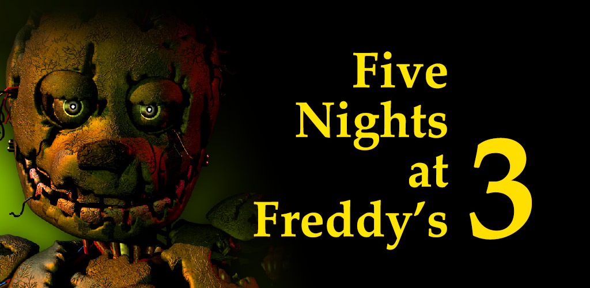

Five Nights at Freddy's Series
Overview:
1. Five Nights at Freddy's

The game that started it all. You play as a night security guard at Freddy Fazbear's Pizza, where you must survive against malfunctioning animatronics in a nightmarish environment. The game is centered around managing limited resources like power while keeping watch over the restaurant's security cameras to prevent the animatronics from attacking.
2. Five Nights at Freddy' 2

A prequel to the first game, FNaF 2 introduces new animatronics, additional gameplay mechanics like a mask and flashlight, and an even deeper dive into the dark lore of Freddy Fazbear's Pizza. The game ups the ante with more aggressive threats and an even greater focus on survival.
3. Five Nights at Freddy's 3
Set 30 years after the closure of Freddy Fazbear's Pizza, the game focuses on a horror attraction based on the franchise's dark past. New threats, like Springtrap, emerge as you must survive against the remnants of the old animatronics, while uncovering the twisted history that haunts the attraction.
4. Five Nights at Freddy's 4

A prequel to Fnaf 2, FNaF 4 takes place in the protagonist's childhood home. The terrifying new animatronics, that are nightmare versions of previous animatronics, bring a new level of fear to the game, with intense jump scares and a focus on sound and visual cues.
5. Five Nights at Freddy's Sister Location

A departure from the traditional pizzeria setting, Sister Location takes you to a sister company to Freddy Fazbear's Pizza, where you work as a technician in an underground facility. The game introduces new animatronics, a more narrative-driven approach, and new mechanics like moving between rooms.
6. Five Nights at Freddy's Pizzeria Simulator
A hybrid of simulation and survival horror, this game challenges you to manage a pizza restaurant during the day, while also surviving terrifying threats at night. The game introduces new characters and a darker narrative as you uncover the secrets behind the franchise.
6. Five Nights at Freddy's Help Wanted

A virtual reality experience that allows players to immerse themselves in the horrifying world of FNaF. It includes mini-games based on the series' previous entries and introduces new horrors, all designed to exploit the immersive capabilities of VR technology.
7. Five Nights at Freddy's Security Breach

In Security Breach takes a bold step into an open-world environment. You play as Gregory, a young boy trapped in a massive shopping mall overnight, with animatronic enemies like Glamrock Chica and others hunting you down. The game introduces a fresh, free-roaming gameplay style while maintaining the series' tension and horror.